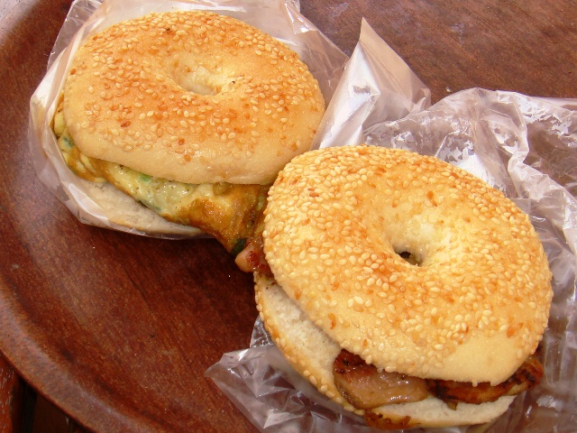
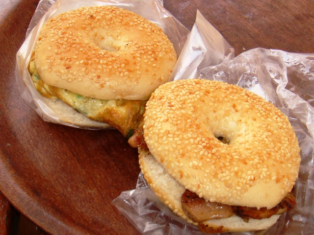
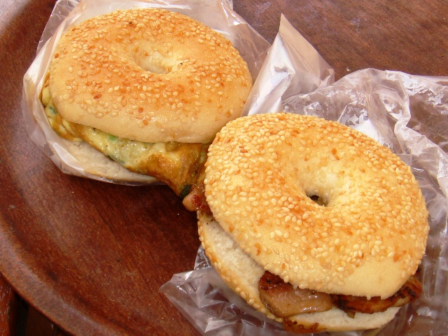
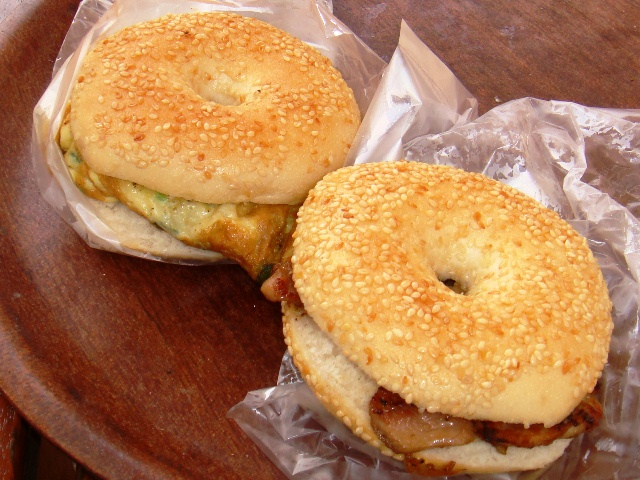

I am really happy today because I see myself to be improving drustically in almost everything I need to. I am mainly glad now because I figured out how to make my website creation skills more realistic and fun.
This makes me soo proud, I have also notices that consistant practice makes perfect. I'm certain that I can type ABCDEFGHIJKLMNOPQRQRATUVWXYZ really good now. I'm intending on improving my typing speed & accuracy by introducing myself to, "The quick fox jumps over the lazy dog.". This is because it contains every letter in the English Alphabet. Thanks soo much for reading ;-)